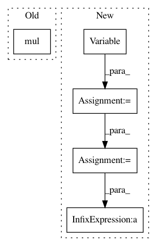

b4117ffdb90db3de7fa079d2e66a39d404a1a1a9,test/lazy/mul_lazy_variable_test.py,,test_exact_gp_mll,#,48
Before Change
diag_var_expand = diag_var.expand(4)
toeplitz = ToeplitzLazyVariable(c1_var).evaluate()
kronecker_product = KroneckerProductLazyVariable(c2_var).evaluate()
actual = toeplitz.mul(kronecker_product) + diag_var_expand.diag()
// Actual case
mul_lv, diag = make_mul_lazy_var()
After Change
// Test case
c1_var = Variable(torch.Tensor([5, 1, 2, 0]), requires_grad=True)
c2_var = Variable(torch.Tensor([[6, 0], [1, -1]]), requires_grad=True)
c3_var = Variable(torch.Tensor([7, 2, 1, 0]), requires_grad=True)
diag_var = Variable(torch.Tensor([1]), requires_grad=True)
diag_var_expand = diag_var.expand(4)
toeplitz_1 = ToeplitzLazyVariable(c1_var).evaluate()
kronecker_product = KroneckerProductLazyVariable(c2_var).evaluate()
toeplitz_2 = ToeplitzLazyVariable(c3_var).evaluate()
actual = toeplitz_1 * kronecker_product * toeplitz_2 + diag_var_expand.diag()
// Actual case
mul_lv, diag = make_mul_lazy_var()
In pattern: SUPERPATTERN
Frequency: 3
Non-data size: 5
Instances
Project Name: cornellius-gp/gpytorch
Commit Name: b4117ffdb90db3de7fa079d2e66a39d404a1a1a9
Time: 2017-09-22
Author: ruihan.wu14@gmail.com
File Name: test/lazy/mul_lazy_variable_test.py
Class Name:
Method Name: test_exact_gp_mll
Project Name: cornellius-gp/gpytorch
Commit Name: 9708a6eaeed14443c9ccf26594155767fcbf83d6
Time: 2018-01-24
Author: gpleiss@gmail.com
File Name: gpytorch/models/exact_gp.py
Class Name: ExactGP
Method Name: __call__
Project Name: cornellius-gp/gpytorch
Commit Name: b4117ffdb90db3de7fa079d2e66a39d404a1a1a9
Time: 2017-09-22
Author: ruihan.wu14@gmail.com
File Name: test/lazy/mul_lazy_variable_test.py
Class Name:
Method Name: test_trace_log_det_quad_form